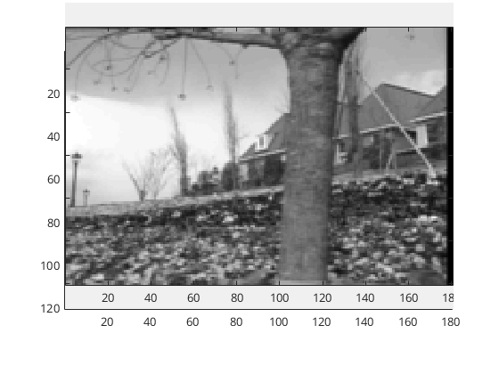

Contents
question 5
read images and view them
I1 = im2double(imread('flower-i1.tif')); I2 = im2double(imread('flower-i2.tif')); mymovie(I1, I2); % define the algorithm's parameters treeMasks = zeros(size(I1,1), size(I1,2), 3); flowersMasks = zeros(size(I1,1), size(I1,2), 3); treeMasks(1:40, 90:130, 1) = 1; treeMasks(41:80, 90:130, 2) = 1; treeMasks(81:end, 90:130, 3) = 1; flowersMasks(90:end, 1:40, 1) = 1; flowersMasks(85:end, 41:80, 2) = 1; flowersMasks(80:end, 140:end, 3) = 1; lambda = 0; num_iterations = 100; v_tree = zeros(2, 1, 3); v_flowers = zeros(2, 1, 3); % for each tree/flowers subimage, run the LK algorithm for i = 1:3 v_tree(:,:, i) = Full_LK(I1, I2, lambda, treeMasks(:,:,i), ... num_iterations); v_flowers(:,:, i) = Full_LK(I1, I2, lambda, ... flowersMasks(:,:,i), num_iterations); end v_tree v_flowers mean_v_tree = mean(v_tree, 3) mean_v_flowers = mean(v_flowers, 3)
v_tree(:,:,1) =
-2.7673
-0.4681
v_tree(:,:,2) =
-0.9555
-0.1756
v_tree(:,:,3) =
-1.8337
-0.0013
v_flowers(:,:,1) =
-1.1373
0.0208
v_flowers(:,:,2) =
-1.0938
-0.0014
v_flowers(:,:,3) =
-1.2313
-0.0091
mean_v_tree =
-1.8522
-0.2150
mean_v_flowers =
-1.1541
0.0034
 question 6
REAL_VELOCITY = 1; L2_DIFF = 2; squareSize = 128; sigmas = [10, 1]; %lambda = 0.001; lambda = 0; mask = ones(squareSize); num_iterations = 1; maxVelocity = squareSize / 3; velocities = (-maxVelocity):maxVelocity; results = zeros(length(velocities), 2); figure; hold on; for sigma = sigmas firstFrame = GausSpot(squareSize, sigma, [0, 0]); for i = 1:numel(velocities) real_v = velocities(i); secondFrame = GausSpot(squareSize, sigma, [real_v, 0]); estimated_v = Full_LK(firstFrame, secondFrame, lambda, ... mask, num_iterations); results(i, REAL_VELOCITY) = real_v; % the L2 norm of a scalar is the abs value results(i, L2_DIFF) = abs(estimated_v(1) - real_v); end plot(results(:, REAL_VELOCITY), results(:, L2_DIFF)); end hold off; title({'LK estimation error on a gaussian spot', ... ['\lambda = ', num2str(lambda)], ... [' Square size = ', num2str(squareSize)]}); xlabel('True Velocity'); ylabel({'Estimation Error', '(L_2 norm of difference)'}); legend(['\sigma = ', num2str(sigmas(1))], ... ['\sigma = ', num2str(sigmas(2))]);
question 7
constants
fatStr = {'Thin', 'Fat'};
THIN = 0;
FAT = 1;
lambda = 0.01;
contrasts = 1:-0.01:0;
iters = [2, 10, 70];
legends = cell(2, numel(iters));
% plotting
fatRhom = rhombusMovie(1, 1);
thinRhom = rhombusMovie(0, 1);
figure; imshow([fatRhom, thinRhom]);
title('Fat rhombus on the left, thin on the right');
for fatFlag = [THIN, FAT]
figure;
for i = 1:numel(iters)
iter = iters(i);
hold all;
plotRhombus(fatFlag, lambda, iter);
legends{1, i} = sprintf('v_x - %d iterations', iter);
legends{2, i} = sprintf('v_y - %d iterations', iter);
end
legend(legends{:})
title([fatStr{fatFlag+1}, ' rhombus - calculated velocity']);
hold off;
end